Chapter 4 空间分析与可视化
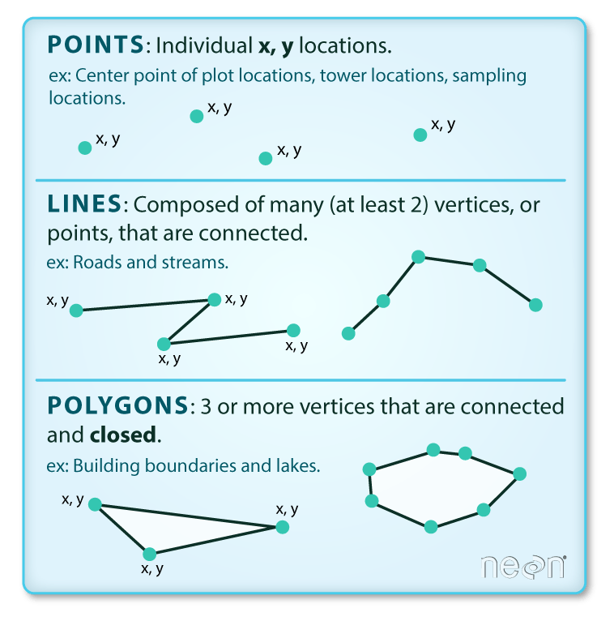 https://nceas.github.io/oss-lessons/spatial-data-gis-law/3-mon-intro-gis-in-r.html
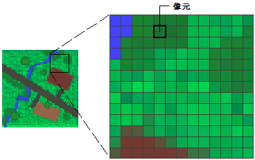 https://desktop.arcgis.com/zh-cn/arcmap/10.3/manage-data/raster-and-images/what-is-raster-data.htm
基本数据类型：矢量与栅格。
| 矢量数据 | 栅格数据 |
|---|---|
| 数据存储量小 | 数据存储量大 |
| 空间位置精度高 | 空间位置精度低 |
| 用网络连接法能完整描述拓扑关系 | 难于建立网络连接关系 |
| 输出简单容易，绘图细腻、精确、美观 | 输出速度快，但绘图粗糙、不美观 |
| 可对图形及其属性进行检索、更新和综合 | 便于面状数据处 |
| 数据结构复杂 | 数据结构简单 |
| 获取数据慢 | 快速获取大量数据 |
| 数学模拟困难 | 数学模拟方便 |
| 多种地图叠合分析困难 | 多种地图叠合分析方便 |
| 不能直接处理数字图像信息 | 能直接处理数字图像信息 |
| 空间分析不容易实现 | 空间分析易于进行 |
| 边界复杂、模糊的事物难以描述 | 容易描述边界复杂、模糊的事物 |
| 数据输出的费用较高 | 技术开发费用低 |
4.1 矢量数据
- 加载需要的库
library(raster) #raster包用于绘图
library(sp) #sp包用于矢量数据操作
library(rgdal) # rgdal用于读写数据
library(rgeos) # rgeos用于空间分析- 由坐标产生数据
# ================================================================
# readWKT, 由坐标产生矢量文件
# ================================================================
g = list()
g[[1]]=readWKT("POINT(6 10)")
g[[2]]=readWKT("LINESTRING(3 4,10 50,20 25)")
g[[3]]=readWKT("POLYGON((1 1,5 1,5 5,1 5,1 1),(2 2,2 3,3 3,3 2,2 2))")
g[[4]]=readWKT("MULTIPOINT((3.5 5.6),(4.8 10.5))")
g[[5]]=readWKT("MULTILINESTRING((3 4,10 50,20 25),(-5 -8,-10 -8,-15 -4))")
g[[6]]=readWKT("MULTIPOLYGON(((1 1,5 1,5 5,1 5,1 1),(2 2,2 3,3 3,3 2,2 2)),((6 3,9 2,9 4,6 3)))")
g[[7]]=readWKT("GEOMETRYCOLLECTION(POINT(4 6),LINESTRING(4 6,7 10))")
par(mfrow=c(2, 4))
for(i in 1:7){
plot(g[[i]], axes=TRUE)
}
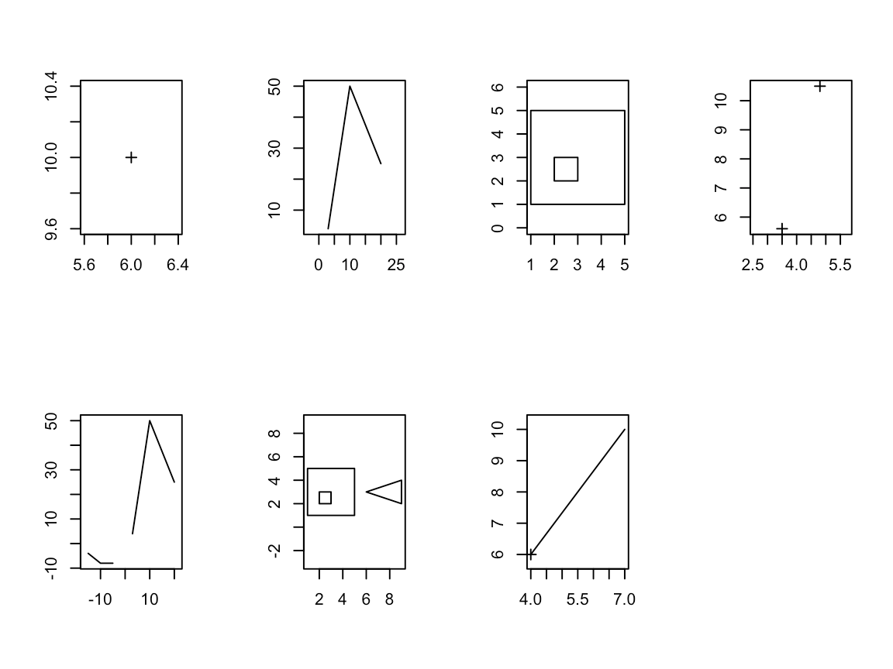
(#fig:ch4.readWKT)readwkt
# ================================================================
# 读取坐标，并产生SpatialLines文件。
# ================================================================
xy=read.table('Exercise/Data_text/xy.csv', header = TRUE)
x=xy[1:100, 1]
y=xy[1:100, 2]
str = paste("LINESTRING(",
paste(
paste(x, y), collapse = ', '
),
")" )
sp.line = readWKT(str)
crs(sp.line) = sp::CRS("+init=epsg:4326")
graphics.off()
plot(sp.line, axes=TRUE)
points(x, y, col=2, pch=19)
grid()
crs(sp.line)## Coordinate Reference System:
## Deprecated Proj.4 representation: +proj=longlat +datum=WGS84 +no_defs
## WKT2 2019 representation:
## GEOGCRS["WGS 84",
## ENSEMBLE["World Geodetic System 1984 ensemble",
## MEMBER["World Geodetic System 1984 (Transit)",
## ID["EPSG",1166]],
## MEMBER["World Geodetic System 1984 (G730)",
## ID["EPSG",1152]],
## MEMBER["World Geodetic System 1984 (G873)",
## ID["EPSG",1153]],
## MEMBER["World Geodetic System 1984 (G1150)",
## ID["EPSG",1154]],
## MEMBER["World Geodetic System 1984 (G1674)",
## ID["EPSG",1155]],
## MEMBER["World Geodetic System 1984 (G1762)",
## ID["EPSG",1156]],
## ELLIPSOID["WGS 84",6378137,298.257223563,
## LENGTHUNIT["metre",1],
## ID["EPSG",7030]],
## ENSEMBLEACCURACY[2.0],
## ID["EPSG",6326]],
## PRIMEM["Greenwich",0,
## ANGLEUNIT["degree",0.0174532925199433],
## ID["EPSG",8901]],
## CS[ellipsoidal,2],
## AXIS["longitude",east,
## ORDER[1],
## ANGLEUNIT["degree",0.0174532925199433,
## ID["EPSG",9122]]],
## AXIS["latitude",north,
## ORDER[2],
## ANGLEUNIT["degree",0.0174532925199433,
## ID["EPSG",9122]]],
## USAGE[
## SCOPE["unknown"],
## AREA["World."],
## BBOX[-90,-180,90,180]]]- 读取shp数据
# ================================================================
# 读取SHP文件
# ================================================================
sp1 = readOGR(verbose = FALSE, 'Exercise/Data_spatial/Province.shp')
sp2 = readOGR(verbose = FALSE, 'Exercise/Data_spatial/City.shp')
sp3 = readOGR(verbose = FALSE, 'Exercise/Data_spatial/TibetPlateau.shp')
par(mfrow = c(1, 2))
plot(sp1)
plot(sp1, col=rainbow(10))
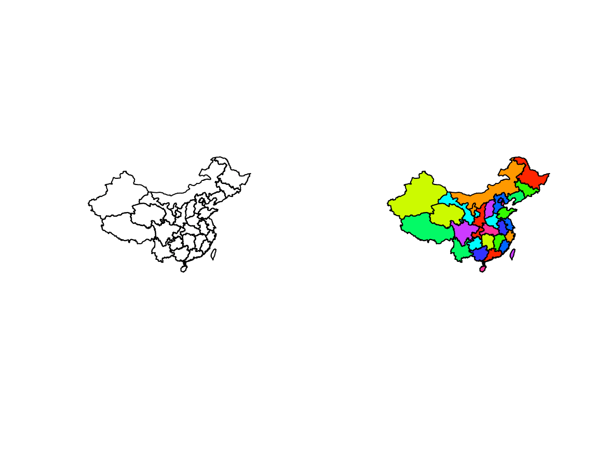
(#fig:ch4.read.sp)矢量地图
- 渔网 由自定义函数实现渔网功能。
# ================================================================
# 产生渔网矢量文件
# ================================================================
#install.packages('abind') # 此函数需要abind包。
fishnet <- function(ext, crs=sp::CRS("+init=epsg:4326"),
n=10,
dx=diff(ext[1:2])/n, dy=dx
){
xmin = ext[1]
xmax = ext[2]
ymin = ext[3]
ymax = ext[4]
dx = min(dx, diff(ext[1:2]))
dy = min(dy, diff(ext[3:4]))
xx=seq(ext[1], ext[2], by=dx)
yy=seq(ext[3], ext[4], by=dy)
nx = length(xx)
ny = length(yy)
xy=expand.grid(xx,yy)
xm = matrix(xy[,1], nx,ny)
ym = matrix(xy[,2], nx, ny)
xloc=abind::abind(as.matrix(xm[-nx, -ny]), as.matrix(xm[-nx, -1]), as.matrix(xm[-1, -1]),
as.matrix(xm[-1, -ny]), as.matrix(xm[-nx, -ny]), along=3)
yloc=abind::abind(as.matrix(ym[-nx, -ny]), as.matrix(ym[-nx, -1]), as.matrix(ym[-1, -1]),
as.matrix(ym[-1, -ny]), as.matrix(ym[-nx, -ny]), along=3)
df=data.frame(as.numeric(apply(xloc, 1:2, min)),
as.numeric(apply(xloc, 1:2, max)),
as.numeric(apply(yloc, 1:2, min)),
as.numeric(apply(yloc, 1:2, max)))
df = data.frame(df, rowMeans(df[,1:2]), rowMeans(df[,1:2+2]) )
colnames(df) = c('xmin','xmax','ymin', 'ymax','xcenter','ycenter')
str=paste('GEOMETRYCOLLECTION(',
paste(paste('POLYGON((',
paste(xm[-nx, -ny], ym[-nx, -ny], ',' ),
paste(xm[-nx, -1], ym[-nx, -1], ','),
paste(xm[-1, -1], ym[-1, -1], ','),
paste(xm[-1, -ny], ym[-1, -ny], ','),
paste(xm[-nx, -ny], ym[-nx, -ny], '' ), '))' )
, collapse =','),
')' )
SRL = rgeos::readWKT(str)
ret = sp::SpatialPolygonsDataFrame( Sr=SRL, data=df, match.ID = TRUE)
raster::crs(ret) = crs
return(ret)
}
sp3 = readOGR(verbose = FALSE, 'Exercise/Data_spatial/TibetPlateau.shp')
ext = raster::extent(sp3)
sp.fn = fishnet(ext=ext, dx=2)
cent.xy = gCentroid(sp.fn, byid=TRUE)
graphics.off()
plot(sp.fn)
plot(add=TRUE, sp3, border=2)
points(cent.xy, col=3, cex=.5)- 重投影
# ================================================================
# 重投影
# ================================================================
library(rgeos)
crs(sp.fn)## Coordinate Reference System:
## Deprecated Proj.4 representation: +proj=longlat +datum=WGS84 +no_defs
## WKT2 2019 representation:
## GEOGCRS["WGS 84",
## ENSEMBLE["World Geodetic System 1984 ensemble",
## MEMBER["World Geodetic System 1984 (Transit)",
## ID["EPSG",1166]],
## MEMBER["World Geodetic System 1984 (G730)",
## ID["EPSG",1152]],
## MEMBER["World Geodetic System 1984 (G873)",
## ID["EPSG",1153]],
## MEMBER["World Geodetic System 1984 (G1150)",
## ID["EPSG",1154]],
## MEMBER["World Geodetic System 1984 (G1674)",
## ID["EPSG",1155]],
## MEMBER["World Geodetic System 1984 (G1762)",
## ID["EPSG",1156]],
## ELLIPSOID["WGS 84",6378137,298.257223563,
## LENGTHUNIT["metre",1],
## ID["EPSG",7030]],
## ENSEMBLEACCURACY[2.0],
## ID["EPSG",6326]],
## PRIMEM["Greenwich",0,
## ANGLEUNIT["degree",0.0174532925199433],
## ID["EPSG",8901]],
## CS[ellipsoidal,2],
## AXIS["longitude",east,
## ORDER[1],
## ANGLEUNIT["degree",0.0174532925199433,
## ID["EPSG",9122]]],
## AXIS["latitude",north,
## ORDER[2],
## ANGLEUNIT["degree",0.0174532925199433,
## ID["EPSG",9122]]],
## USAGE[
## SCOPE["unknown"],
## AREA["World."],
## BBOX[-90,-180,90,180]]]spx = spTransform(sp.fn, sp::CRS("+init=epsg:2342")) #西安1980，高斯克吕格99E
par(mfrow=c(1, 2))
plot(sp.fn, axes=T)
plot(spx, axes=T)
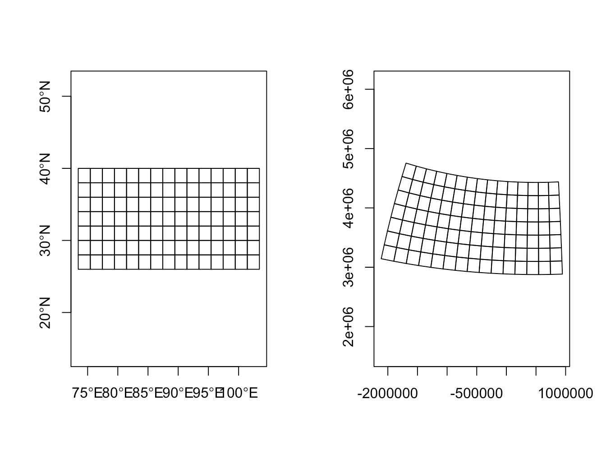
Figure 4.1: 重投影矢量地图
- 数据分析与操作
#重投影数据
s1 = spTransform(sp1, sp::CRS("+init=epsg:2342"))
s2 = spTransform(sp2, sp::CRS("+init=epsg:2342"))
s3 = spTransform(sp3, sp::CRS("+init=epsg:2342"))
# 获得各省的面积
ia=gArea(s1, byid=TRUE)
# 各省的几何中心点
co1 = cbind(coordinates(sp1), coordinates(s1))
# 经纬度和投影后的城市坐标
co2 = cbind(coordinates(sp2), coordinates(s2))
graphics.off()
plot(s1, col=rainbow(10));
plot(add=T, s2, pch=18, cex=2) #省会点
points(co1[, 3:4]) # 几何中心点# 合并省界
sp.cn = gUnaryUnion(sp1)
plot(sp.cn)
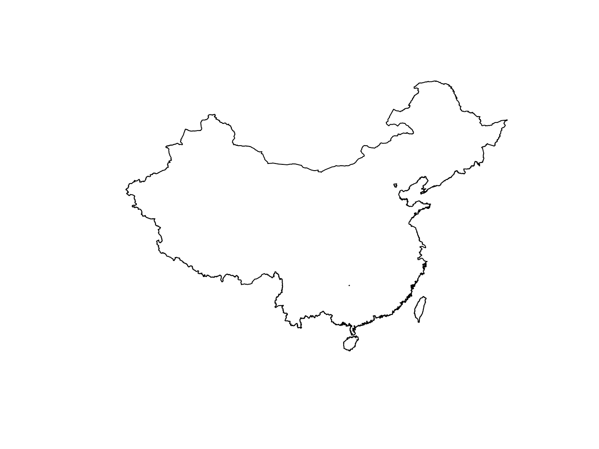
Figure 4.2: 合并地图要素
# ------------缓冲区
buf50 = gBuffer(s3, width=50e3)
buf100 = gBuffer(s3, width=100e3)
plot(buf100); plot(add=T, border=2, buf50); plot(add=T, border=3, s3)
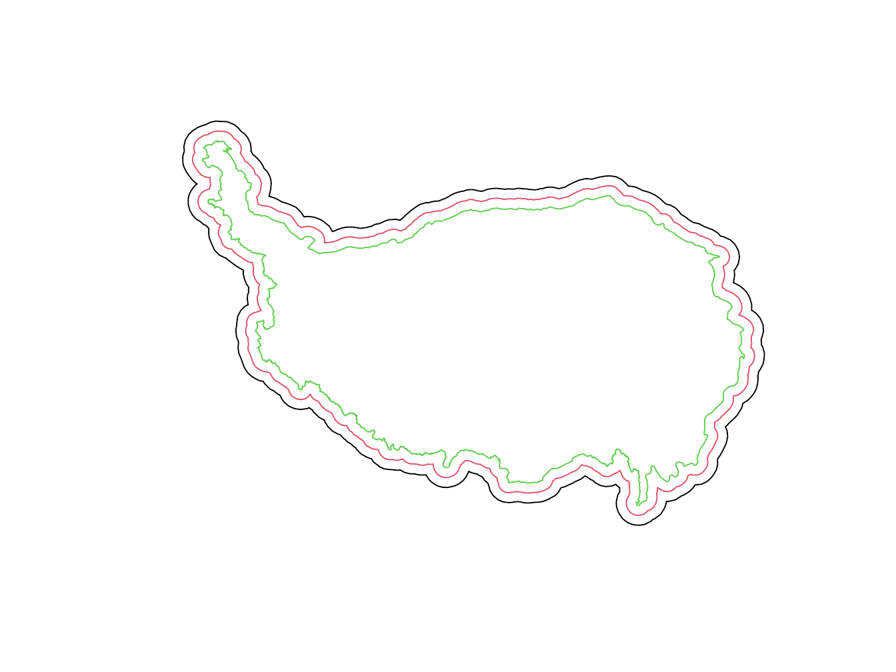
Figure 4.3: 空间缓冲区
# ------------简化线条
simp2 = gSimplify(s3, tol=2000)
simp20 = gSimplify(s3, tol=20000)
simp50 = gSimplify(s3, tol=50000)
par(mfrow=c(1, 3))
plot(s3)
plot(simp20)
plot(simp50)
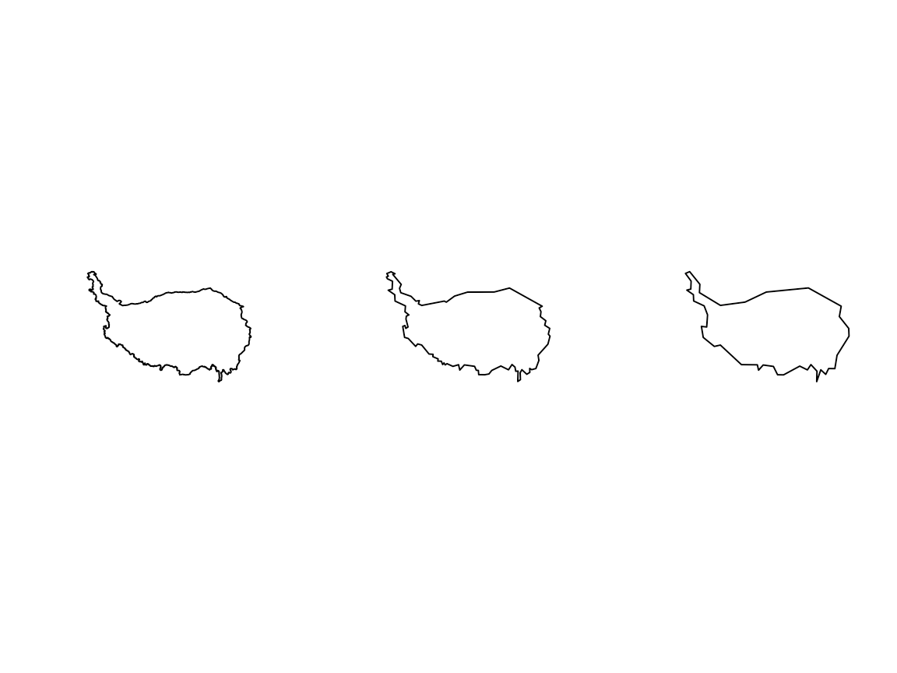
Figure 4.4: 简化线条要素
# ------------泰森多边形
# install.packages('deldir') # 需要deldir支持
require(sp)
require(deldir)
voronoipolygons = function(layer) {
crds = layer@coords
z = deldir(crds[,1], crds[,2])
w = tile.list(z)
polys = vector(mode='list', length=length(w))
for (i in seq(along=polys)) {
pcrds = cbind(w[[i]]$x, w[[i]]$y)
pcrds = rbind(pcrds, pcrds[1,])
polys[[i]] = Polygons(list(Polygon(pcrds)), ID=as.character(i))
}
SP = SpatialPolygons(polys)
voronoi = SpatialPolygonsDataFrame(SP, data=data.frame(x=crds[,1],
y=crds[,2], row.names=sapply(slot(SP, 'polygons'),
function(x) slot(x, 'ID'))))
}
vp=voronoipolygons(s2)
graphics.off()
plot(vp, border=4,axes=TRUE)
plot(add=T, s2, col=2, pch=19)4.2 栅格数据
最简形式的栅格由按行和列（或格网）组织的像元（或像素）矩阵组成，其中的每个像元都包含一个信息值（例如温度）。栅格可以是数字航空像片、卫星影像、数字图片或甚至扫描的地图。（参考什么是栅格数据？
# ================================================================
# 读取数据及等高线
# ================================================================
r = raster('Exercise/Data_spatial/DEM.tif')
r.crop = crop(r, sp3) # 切除包含区域
r.tp = mask(r.crop, sp3) # 蒙版，切除不规则边界外的数据
graphics.off()
plot(r.tp)
plot(sp3, add=TRUE)
contour(r.tp, add=T, col='gray30' )- 重采样
# ================================================================
# 重采样
# ================================================================
t01 = raster()
extent(t01) = extent(r.tp)
t05=t01
res(t01) = 0.1 # 分辨率0.1度
res(t05) = 0.5 # 分辨率0.5度
r1 = resample(r.tp, t01, method = 'bilinear') #双线性插值，0.1度
r2 = resample(r.tp, t05, method = 'ngb') #最临近法，0.5度
r3 = resample(r.tp, t01, method = 'ngb') #最临近法，0.5度
par(mfrow=c(2,2))
plot(r.tp, main=paste0('Original, res=', mean(res(r.tp))))
plot(r1, main='res=0.1, bilinear')
plot(r2, main='res=0.5, ngb')
plot(r3, main='res=0.1, ngb')
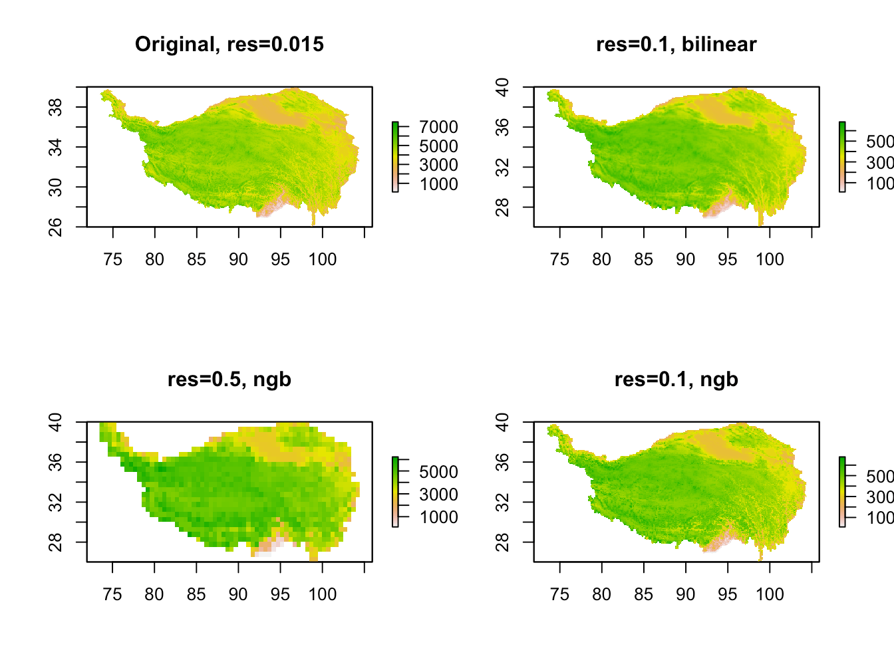
(#fig:ch4.resample)栅格数据重采样
- 矢量数据重投影
# ================================================================
# 矢量数据重投影
# ================================================================
rp = projectRaster(r.tp, crs=crs(s3)) #栅格数据重投影
par(mfrow=c(1,2))
plot(rp); plot(add=T, s3)
plot(r.tp); plot(add=T, sp3)
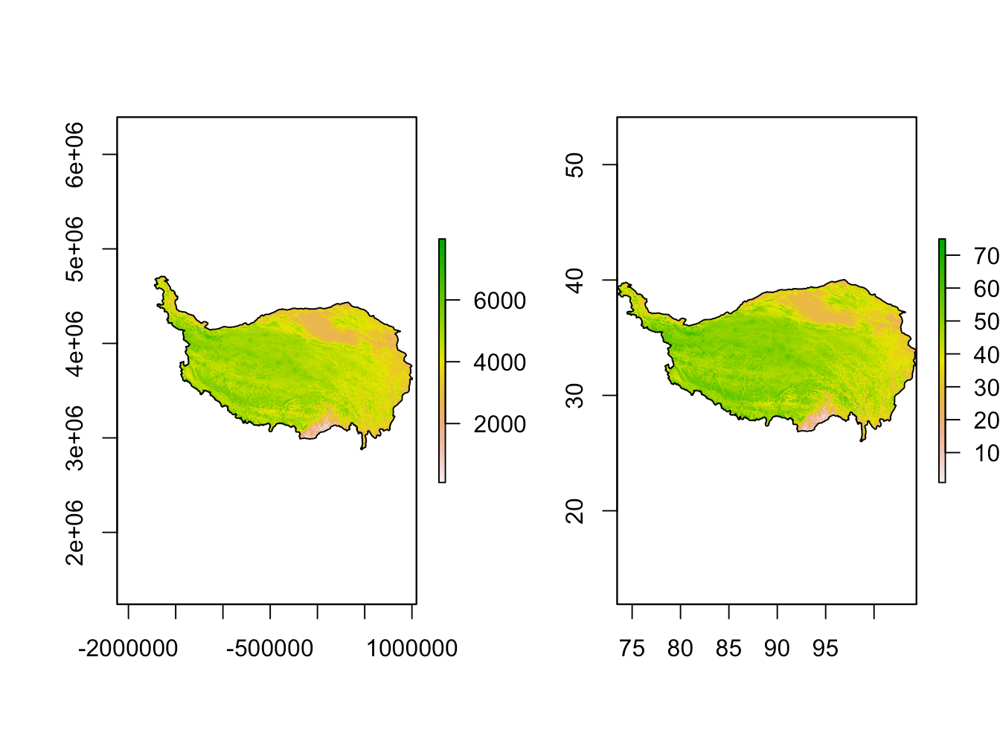
(#fig:ch4.reproject)栅格数据重投影
- 空间随机采样和绘图
# ================================================================
# 空间随机采样和绘图
# ================================================================
n=50
xyz=raster::sampleRandom(r.tp, size=n, xy=TRUE)
graphics.off()
plot(r.tp)
points(xyz[, 1:2],col=2)
# 更复杂的作图效果
xrand = rnorm(n)
pch = rep(25, n) # 符号
pch[xrand > 0] = 17
col=rep(4, n) # 符号颜色
col[xrand > 0] = 2
cex = (abs(xrand)^.6) # 符号大小
zlim=cellStats(r.tp, range)
brks = round(seq(zlim[1], zlim[2], length.out = n), -2)
colbar = colorspace::diverge_hcl(n=n)
graphics.off()
plot(sp3, axes=TRUE)
# plot(r, add=T, legend=FALSE, alpha=0.5)
plot(r.tp, add=TRUE, col=colbar, brks=brks, legend=FALSE)
points(xyz[, 1:2], col=col, pch=pch, cex=cex)
plot(add=T, sp3)
grid()
plot(r.tp, legend.only=TRUE, breaks=brks, col=colbar,
smallplot=c(c(0.2, 0.8), c(0.0, 0.03)+0.25 ),
# legend.width=5, legend.shrink=.7, cex=5,
horizontal=T,
axis.args=list(col.axis='blue', lwd = 0,
font.axis=4, cex.axis=1.5,tck = 0, line=-.85,
at=brks,
cex.axis=.8)
# ,legend.args=list(side=4, text='mm',col=4,font=2, cex=1.5)
)- 空间插值
# ================================================================
# 空间插值
# ================================================================
#### Thin plate spline model
# install.packages('fields') #需要fields 支持
library(fields)
rx = r1
tps <- fields::Tps(xyz[, 1:2], xyz[, 3])## Warning:
## Grid searches over lambda (nugget and sill variances) with minima at the endpoints:
## (GCV) Generalized Cross-Validation
## minimum at right endpoint lambda = 9.073926e-06 (eff. df= 47.49998 )p <- raster(rx)
p <- interpolate(p, tps)
p <- mask(p, rx)
graphics.off()
plot(p); points(xyz[, 1:2]); plot(add=T, sp3)
contour(p, add=T, col='gray30')
# -----计算插值的误差。计算较慢-----
# se <- interpolate(p, tps, fun=predictSE)
# se <- mask(se, rx)
# plot(se); points(xyz[, 1:2]); plot(add=T, sp3)
# contour(se, add=T, col='gray30')- 地形分析
# ================================================================
# 地形分析
# ================================================================
x = raster::slopeAspect(r.tp) # 计算坡度和坡向
par(mfrow=c(1,2))
plot(x[[1]], main=names(x)[1])
plot(x[[2]], main=names(x)[2])
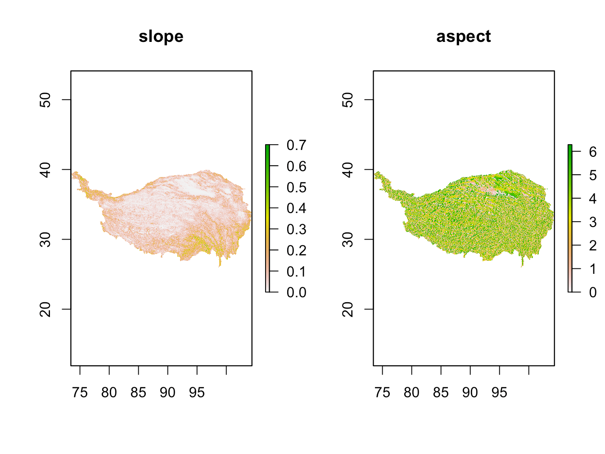
(#fig:ch4.terrain)地形分析
- 矢量栅格化
# ================================================================
# 矢量栅格化
# ================================================================
r.sp1=rasterize(x=sp1,y=t01)
t01[]=1
par(mfrow=c(1,2))
plot(t01); plot(add=T, sp1)
plot(r.sp1)
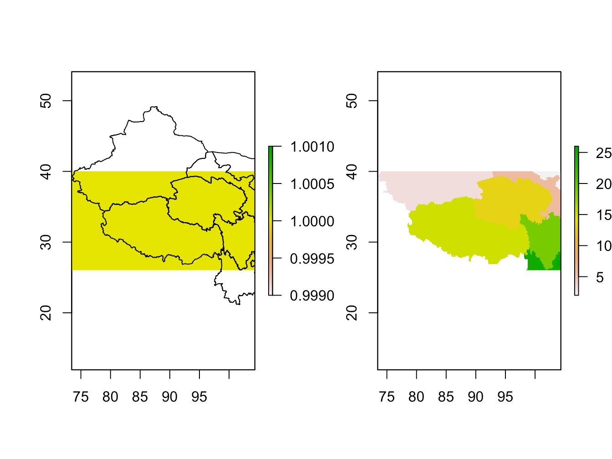
(#fig:ch4.rasterize)矢量数据栅格化
- 读取NetCDF数据
# ================================================================
# 读取NetCDF数据
# ================================================================
fn ='Exercise/Data_nc/GLDAS_NOAH10_3H.A20030107.0000.021.nc4'
library(ncdf4)
ncid=nc_open(fn) #打开文件
print(names(ncid))## [1] "filename" "writable" "id" "error" "safemode"
## [6] "format" "is_GMT" "groups" "fqgn2Rindex" "ndims"
## [11] "natts" "dim" "unlimdimid" "nvars" "var"xname = names(ncid$var)
print(xname)## [1] "time_bnds" "Swnet_tavg" "Lwnet_tavg"
## [4] "Qle_tavg" "Qh_tavg" "Qg_tavg"
## [7] "Snowf_tavg" "Rainf_tavg" "Evap_tavg"
## [10] "Qs_acc" "Qsb_acc" "Qsm_acc"
## [13] "AvgSurfT_inst" "Albedo_inst" "SWE_inst"
## [16] "SnowDepth_inst" "SoilMoi0_10cm_inst" "SoilMoi10_40cm_inst"
## [19] "SoilMoi40_100cm_inst" "SoilMoi100_200cm_inst" "SoilTMP0_10cm_inst"
## [22] "SoilTMP10_40cm_inst" "SoilTMP40_100cm_inst" "SoilTMP100_200cm_inst"
## [25] "PotEvap_tavg" "ECanop_tavg" "Tveg_tavg"
## [28] "ESoil_tavg" "RootMoist_inst" "CanopInt_inst"
## [31] "Wind_f_inst" "Rainf_f_tavg" "Tair_f_inst"
## [34] "Qair_f_inst" "Psurf_f_inst" "SWdown_f_tavg"
## [37] "LWdown_f_tavg"# View(ncid$var[[3]])
mat=ncvar_get(ncid, varid = 'SoilMoi0_10cm_inst') #读取数据矩阵
lon = ncvar_get(ncid, varid = 'lon') # 读取x坐标
lat = ncvar_get(ncid, varid = 'lat') # 读取y坐标
nc_close(ncid) #关闭文件
graphics.off()
image(lon, lat, mat)
# 通过函数将nc转为Raster
read.nc2Raster <- function(fn, fid=ncdf4::nc_open(fn), plot=TRUE,
varid=2, xname=NULL, yname=NULL, flip=TRUE){
nv = fid$nvars
if(is.character(varid)){
varid = varid
}else{
vns = names(fid$var)
if(nv>0){
varid = vns[varid]
}else{
varid = vns[1]
}
}
if(is.null(xname) | is.null(yname)){
dn = names(fid$dim)
yname = dn[grepl('^lat|^x', tolower(dn) )]
xname = dn[grepl('^lon|^y', tolower(dn) )]
}
x = ncdf4::ncvar_get(fid, xname)
y = ncdf4::ncvar_get(fid, yname)
nx=length(x); ny=length(y);
dx=mean(diff(x)); dy=mean(diff(y))
r = raster::raster(ncols=nx, nrows=ny)
raster::extent(r) = c(min(x), max(x), min(y), max(y)) + c(-dx, dx, -dy, dy)/2
val = ncdf4::ncvar_get(fid, varid)
nc_close(fid)
# dim(val)
if(flip){
idx = ny:1
}else{
idx = 1:ny
}
ndims = length(dim(val))
if(ndims==3){
nd = dim(val)
rl = list()
for(i in 1:nd[3]){
r = raster::setValues(r, t(val[, idx, i]) )
rl[[i]] = r
}
rs = raster::stack(rl)
}else{
rs = raster::setValues(r, t(val[, idx ]) )
}
if(plot){
raster::plot(rs, main=varid)
}
rs
}
graphics.off()
r.nc = read.nc2Raster(fn, varid = 3)- 多层NetCDF文件转为Raster
# ================================================================
# 多层NetCDF文件转为Raster，生成动画。
# ================================================================
fn = 'Exercise/Data_nc/soilw.mon.ltm.v2.nc'
library(ncdf4)
library(rasterVis)
ncid=nc_open(fn)
print(names(ncid))## [1] "filename" "writable" "id" "error" "safemode"
## [6] "format" "is_GMT" "groups" "fqgn2Rindex" "ndims"
## [11] "natts" "dim" "unlimdimid" "nvars" "var"xname = names(ncid$var)
print(xname)## [1] "climatology_bounds" "soilw" "valid_yr_count"# View(ncid$var[[3]])
ndims = ncid$ndims
names(ncid$dim)## [1] "lon" "lat" "time" "nbnds"mat=ncvar_get(ncid, varid = 'soilw') # 读取土壤湿度数据
lon = ncvar_get(ncid, varid = 'lon')
lat = ncvar_get(ncid, varid = 'lat')
nc_close(ncid)
dim(mat)## [1] 720 360 12image(mat[, , 1]) #
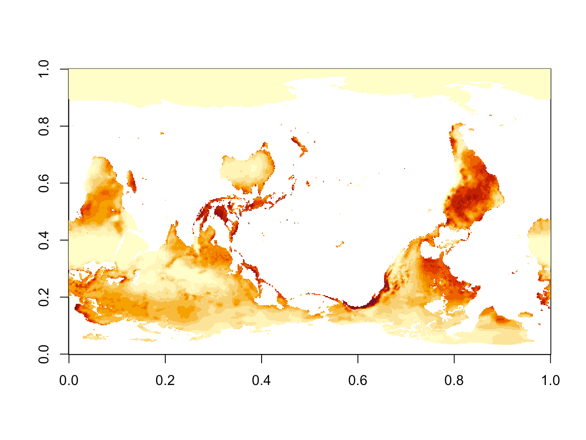
(#fig:ch4.stack-1)多层NetCDF文件转为Raster
x.avg = apply(mat, 1:2, mean)
image(x.avg)
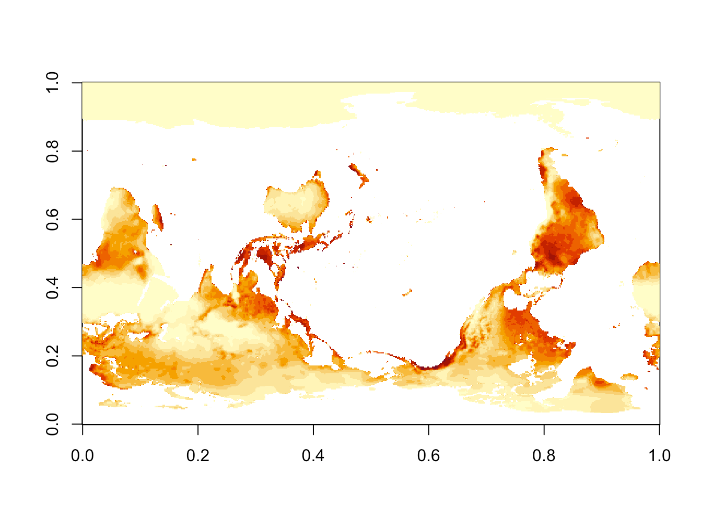
(#fig:ch4.stack-2)多层NetCDF文件转为Raster
#-----------
rx = read.nc2Raster(fn, flip=F) # 数据返回的是多层矢量。
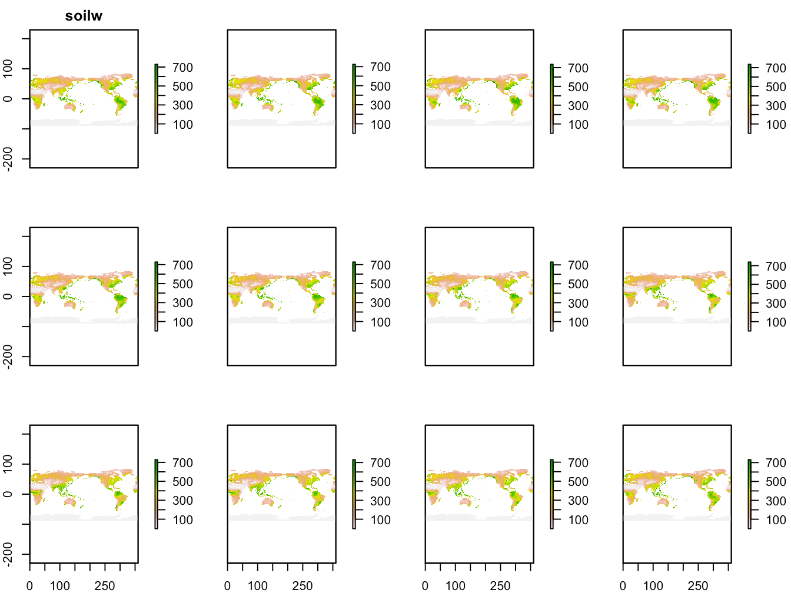
(#fig:ch4.stack-3)多层NetCDF文件转为Raster
names(rx) = month.name- 动画查看
# ================================================================
# 动画查看
# ================================================================
cols = rev( colorspace::diverge_hcl(n=50) )
graphics.off()
animate(rx, col=cols)- 三维地形图
# 需要rgl支持
# install.packages('rasterVis')
rasterVis::plot3D(r)
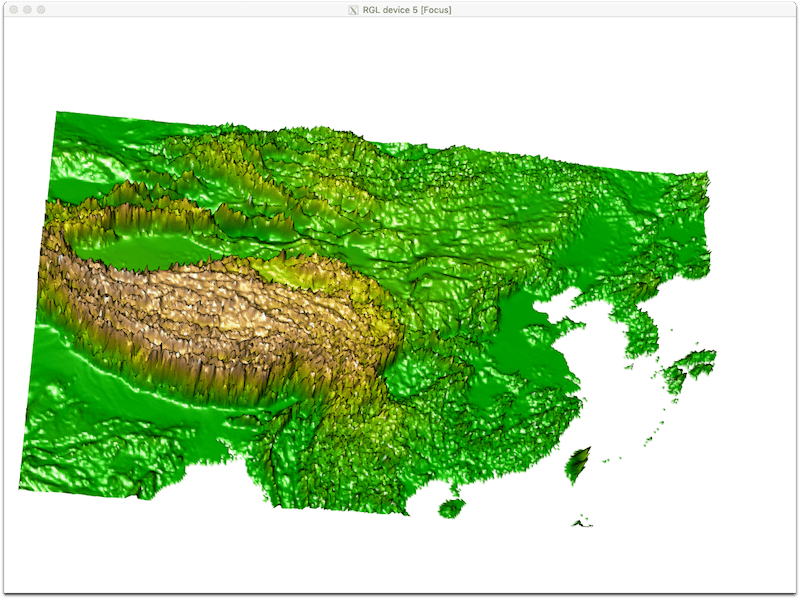
三维中国地形图
4.3 可视化
library(raster)
library(rgdal)
r = raster('Exercise/Data_spatial/DEM.tif')
sp1 = readOGR(verbose = FALSE, 'Exercise/Data_spatial/Province.shp')
sp2 = readOGR(verbose = FALSE, 'Exercise/Data_spatial/City.shp')
sp3 = readOGR(verbose = FALSE, 'Exercise/Data_spatial/TibetPlateau.shp')
plot(r)
plot(add=TRUE, sp1, border='gray60')
plot(add=TRUE, sp2, col='gold', pch=19, cex=2)
plot(add=TRUE, sp3, col = rgb(0.1, 0, 0, alpha=0.1))
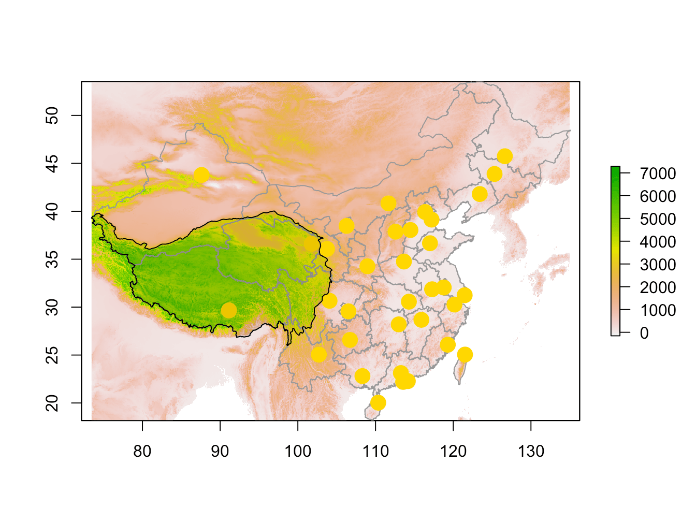
Figure 4.5: 地图
- 保存绘图
# png(filename='Map.png') #最简单输入PNG格式
# pnf(filename='Map.pdf') #输出PDF格式
png(filename='Map.png', width=279, height=216, res=200, unit='mm') #精细数据输出
plot(r)
plot(add=TRUE, sp1, border='gray60')
plot(add=TRUE, sp2, col='gold', pch=19, cex=2)
plot(add=TRUE, sp3, col = rgb(0.1, 0, 0, alpha=0.1))
dev.off()- 开放数据背景
# install.packages('rosm') # 需要安装ROSM
# install.packages('prettymapr') # 需要安装prettymapr
library(rosm)
library(prettymapr)
ns <- makebbox(37, 104, 33, 103)
osm.plot(ns)
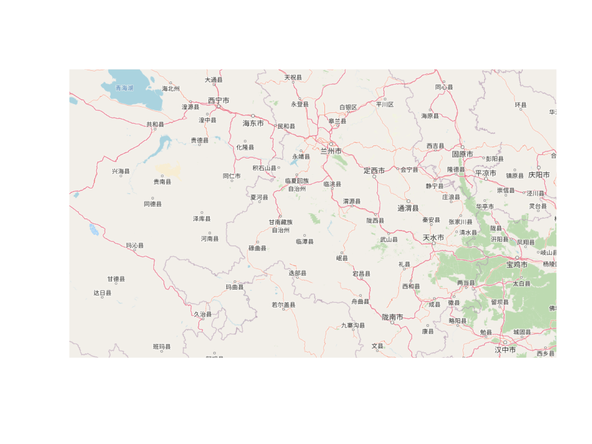
Figure 4.6: OSM地图
loc1 = geocode('lanzhou')
loc2 = geocode('maqu')
prettymap({osm.plot(ns)
osm.points(loc1$lon, loc1$lat, pch=18, cex=1.5, col=2)
osm.points(loc2$lon, loc2$lat, pch=20, cex=1.5, col=3) }, scale.style="ticks", scale.tick.cex=0)
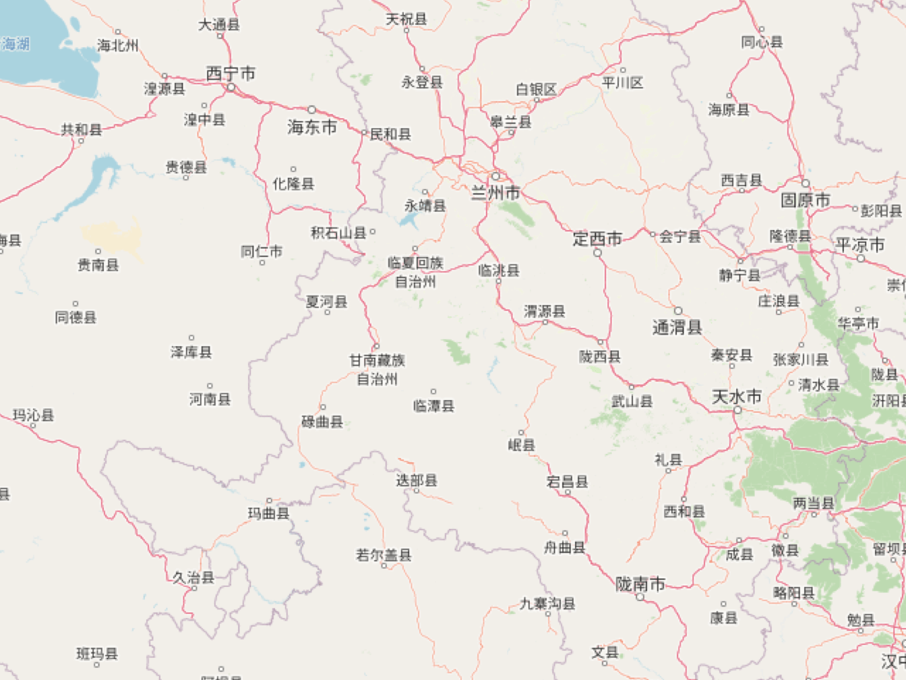
Figure 4.7: OSM地图